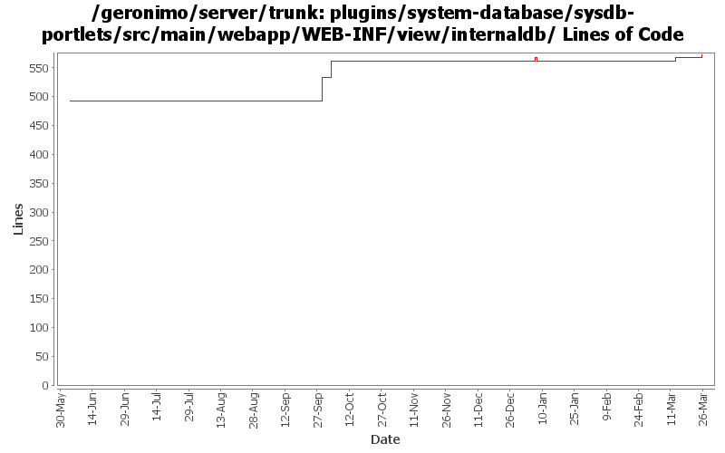

[root]/plugins/system-database/sysdb-portlets/src/main/webapp/WEB-INF/view/internaldb

| Author | Changes | Lines of Code | Lines per Change |
|---|---|---|---|
| Totals | 25 (100.0%) | 176 (100.0%) | 7.0 |
| dwoods | 19 (76.0%) | 158 (89.8%) | 8.3 |
| xuhaihong | 1 (4.0%) | 9 (5.1%) | 9.0 |
| jbohn | 3 (12.0%) | 9 (5.1%) | 3.0 |
| gawor | 2 (8.0%) | 0 (0.0%) | 0.0 |
GERONIMO-4597 Validate Web Admin Console input - fixes for CVE-2008-5518, CVE-2009-0038, and CVE-2009-0039
6 lines of code changed in 1 file:
GERONIMO-4517 Apply unified message display style(G-4484) to javascript alert messages. Together with the localization of these messages. Thanks for the patch, Gang Yin
9 lines of code changed in 1 file:
delete some empty unused files
0 lines of code changed in 1 file:
GERONIMO-4484 Extraction, localization and display of messages generated in portlets. Applied common-message_fix.patch from Gang Yin.
1 lines of code changed in 1 file:
GERONIMO-4474 Pull out the text in the JSP files to resource bundle files. Applied jsp-localization-fix.patch from Gang Yin.
1 lines of code changed in 1 file:
GERONIMO-4484 Extraction, localization and display of messages generated in portlets. Applied common-message-openejb.patch, common-message-activemq.patch, common-message-debugviews.patch, common-message-plancreator.patch and common-message-sysdb.patch from Gang Yin. Also updated 2 console-testsuite DB tests to match modified message strings.
3 lines of code changed in 1 file:
remove unnecessary eval statement from sql portlet
3 lines of code changed in 1 file:
GERONIMO-4025 applied GERONIMO-4025-DB-style.patch from Rex Wang.
17 lines of code changed in 2 files:
GERONIMO-4225 refactor patch to keep DB Manager -> Run SQL db centric while adding an init-param so we can also have a datasource centric DB Pools -> Run SQL instance from the same code
74 lines of code changed in 3 files:
GERONIMO-4225 Allow Run SQL portlet run sql against any configured data source. Thanks to Michal Borowiecki for the patch.
54 lines of code changed in 6 files:
GERONIMO-4081 Accessibility issue: Webking scan errors against 'Check Web Accessibility(Section 508)'
8 lines of code changed in 1 file:
GERONIMO-4025 - Accessibility issues. Rex, thanks for the patch and keep them coming.
0 lines of code changed in 4 files:
fixes to db manager portlet to work in non-english locales. Patch from YunFeng Ma (GERONIMO-4095)
0 lines of code changed in 2 files: